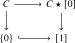
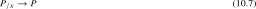
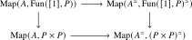
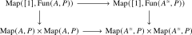
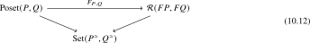
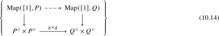

Before constructing the simplices, we study posets: categories whose mapping animae are propositions. A functor into a poset is determined by its values on objects together with the order relations forced by the arrows in its source. This functorial characterization will be used both here and in the following chapters.
10.3.1 Posets and joins
Definition 10.3.1. A category \(C\) is called a partially ordered set, or a poset, if \(C(x,y)\) is a proposition for any objects \(x,y:C^\simeq\). For a fixed universe \(\Cat\), we denote by \(\Poset\) the full subcategory spanned by the posets in \(\Cat\).
Notation 10.3.2. When dealing with sets or posets, we use the following notation.
• We may write \(x\in S\) instead of \(x:S\) for an object of a set \(S\).
• If \(P\) is a poset, we write \(p\leq q\) for the proposition \(P(p,q)\).
Lemma 10.3.3. For any category \(C\), the canonical functor \(C\to C\star[0]\) is a full embedding.
Proof
We have a pullback square of the form

Lemma 10.3.4. For any category \(C\), the cone point \(0\colon[0]\hookrightarrow C\star[0]\) is a terminal object of \(C\star[0]\).
Proof
Let \(x\) be an object of \(C\), regarded as an object of \(C\star[0]\). The mapping anima \((C\star[0])(x,0)\) is the anima of sections, with endpoints \(x\) and the cone point, of the canonical projection \[ C\star[0]\to[0]\star[0]=[1]\, . \] By the universal property of the join as a dependent product, restriction to \([1]^\simeq=\{0\}\sqcup\{1\}\) is an equivalence on section categories. Its fiber at the prescribed endpoints is therefore contractible. Hence \((C\star[0])(x,0)\) is contractible. The inclusion \([0]\hookrightarrow C\star[0]\) is fully faithful by the same pullback argument as in Lemma 10.3.3, so the endomorphism anima of the cone point is also contractible. Thus the cone point is terminal.
Example 10.3.5. For each \(n : \N\), the category \([n]\) is a poset. This is proven by induction using the fact that, for any poset \(P\), the join \(P\star[0]\) is a poset. Indeed we have \(P^\simeq\sqcup[0]=(P\star[0])^\simeq\) by Proposition 3.6.9 and the canonical functor \(P\hookrightarrow P\star[0]\) is a full embedding. Hence the mapping anima between two old objects is a proposition. For an old object \(x\), the mapping anima from \(x\) to the cone point is contractible, while the mapping anima from the cone point to \(x\) is empty. Finally, the endomorphism anima of the cone point is contractible. Thus every mapping anima in \(P\star[0]\) is a proposition.
10.3.2 Functorial characterizations of posets
We characterize posets using arrow, slice, and functor categories. The following lemma will be used to describe functors into a poset.
Lemma 10.3.6 (Upward-closed families). Let \(Q\) and \(A\) be categories and \(\Gamma \subset Q^\simeq\times A^\simeq \) be a subanima such that, for each \(q: Q^\simeq\) and every arrow \(a\to a'\) in \(A\), the proposition \(\Gamma(q,a)\) implies \(\Gamma(q,a')\). Then the projection \[ R\coloneqq \langle \Gamma\subseteq Q^\simeq \times A^\simeq \rangle \to Q \times A \to A \] is a cocartesian fibration.
Proof
Since \(Q\times A \to A\) is tautologically a cocartesian fibration and \(R\subseteq Q\times A\) is a full subcategory, it suffices to check that the cocartesian lift \((q,a)\to(q,a')\) of an arrow \(a\to a'\) remains in \(R\). This is exactly the closure property imposed on \(\Gamma\).
Lemma 10.3.7 (Characterizations of posets). Let \(P\) be a category. The following assertions are logically equivalent.
(1) \(P\) is a poset, i.e., for each \(p,q:P^\simeq\), the mapping anima \(P(p,q)\) is a proposition.
(2) The map \begin{equation} \Map([1],P) \to P^\simeq\times P^\simeq \tag{10.4}\end{equation} is an embedding of animae.
(3) The functor \begin{equation} \Fun([1],P) \to P\times P \tag{10.5}\end{equation} is fully faithful.
(4) For every category \(A\), the induced map \begin{equation} \Fun(A,P)\to \Fun(A^\simeq, P) \tag{10.6}\end{equation} is fully faithful.
(5) For every category \(A\), the induced map (10.6) is an embedding.
(6) For any object \(x : P^\simeq\), the canonical projection

is fully faithful.(7) For any object \(x : P^\simeq\), the canonical projection (10.7) is an embedding.
(8) \(P\catop\) is a poset.
Moreover, if \(P\) is a poset, then the essential image of the map (10.6) consists of those collections \((p_a)_{a:A^\simeq}\) for which \(p_a\leq p_{b}\) whenever we have an arrow \(a\to b\) in \(A\).
Proof
Reversing all morphisms proves the equivalence between (1) and (8). The equivalence between (1) and (2) is precisely the fiberwise characterization of embeddings.
We next prove that (1) implies (3). Assume that \(P\) is a poset and fix objects \(f= (f_0\to f_1)\) and \(g=(g_0\to g_1)\) of \(\Fun([1],P)\). We have to show that the map \[ \Fun([1],P)(f,g) \to P(f_0,g_0)\times P(f_1,g_1) \] of animae is an equivalence. But the fiber over some pair \((\alpha_0,\alpha_1)\) in the target is identified with the anima \(P(f_0,g_1)(g\circ \alpha_0, \alpha_1\circ f)\) which is contractible by the assumption that \(P(f_0,g_1)\) is a proposition.
We now assume (3) and prove
(4).
If the functor (10.5) is fully faithful,
then we may identify \(\Fun([1],P)\) as a full subcategory
of \(P\times P\),
which means that the following square is cartesian
 
It remains to compute the essential image of the functor \(\Fun(A,P)\to\Fun(A^\simeq, P)\). If \(f^\simeq\colon A^\simeq \to P\) is obtained from a functor \(f\colon A\to P\), then it satisfies \(f(a)\leq f(a')\) for each arrow \(a\to a'\). To prove the converse, assume that we have a functor \(f^\simeq\colon A^\simeq\to P^\simeq\), written \(a \mapsto f_a\), satisfying \(f_a\leq f_{a'}\) whenever there is an arrow \(a\to a'\) in \(A\). Our task is to extend this objectwise functor to a functor \(f\colon A\to P\).
Note that since \(P\) is a poset, we have the subanima \[ \Gamma\coloneqq \{(p,a)\mid p\leq f_a\} \subseteq P^\simeq\times A^\simeq, \] If \(p\leq f_a\) and \(a\to a'\), then \(p\leq f_a\leq f_{a'}\). Hence \(\Gamma\) satisfies the condition of Lemma 10.3.6, so that the projection \[ \langle (p,a) \mid p \leq f_a \rangle\subseteq P\times A\to A \] is a cocartesian fibration. The fiber over \(a\) is the slice poset \(P_{/f_a}\), whose terminal object is \(\id_{f_a}\). Thus the object \((f_a, a)\) is terminal in its fiber, so that by functoriality of universals they assemble to a functor \(f\colon A\to P\) extending the original family \((f_a)_{a:A^\simeq}\).
A fully faithful functor induces an embedding on groupoid cores by Corollary 6.4.2; equivalently, its object map has proposition-valued fibers, so the functor is an embedding. Thus (4) implies (5). Specializing the latter condition to \(A=[1]\), and then passing to groupoid cores and using \([1]^\simeq = \{0\}\sqcup\{1\}\) proves (2).
The implication from (3) to (6) follows by pulling back the fully faithful source-target functor along \(P\times\{x\}\to P\times P\). Since every fully faithful functor is an embedding, (6) implies (7). Finally, assume (7). If \(P_{/x}\to P\) is an embedding, then, for each object \(y\) of \(P\), we get by pullback an embedding of the form \[ P(y,x)\hookrightarrow *\, . \] Doing this for all \(x : P^\simeq\) proves (1).
Corollary 10.3.8 (Functor categories into posets). Let \(P\) be a poset and \(A\) any category. Then \(\Fun(A,P)\) is a poset. For two functors \(f,g\colon A\to P\) we have \(f\leq g\) if and only if for all \(a:A^\simeq\) we have \(f(a)\leq g(a)\).
Proof
The source-target characterization (3) of Lemma 10.3.7 shows that \(\Fun(A,P)\) is a poset. Indeed, applying \(\Fun(A,-)\) to the fully faithful source-target functor \(\Fun([1],P)\to P\times P\) gives the fully faithful source-target functor for \(\Fun(A,P)\). The second statement is just a reformulation of the characterization (4).
10.3.3 Partially ordered sets
The name “poset” is of course short for “partially ordered set”. We now turn this fact into a theorem.
Definition 10.3.9. Let \(S\) be a set. A partially order on \(S\) is a relation \begin{equation} \leq \colon S\times S \to \Prop \tag{10.8}\end{equation} which is
• reflexive, i.e., \(x\leq x\) for each \(x\in S\),
• transitive, i.e., \((x\leq y) \times (y\leq z) \to (x\leq z)\) for all \(x,y,z \in S\), and
• antisymmetric, i.e., \((x\leq y)\times (y\leq x) \to (x=y)\) for all \(x,y\in S\).
The category of sets with partial order is the full subcategory of \begin{equation} \int_{S : \Set}\Set_{/S\times S} \tag{10.9}\end{equation} spanned by those \((S, R\to S\times S)\) whose straightening is a partial order on the set \(S\).
Theorem 10.3.10. The functor \begin{equation} F\colon \Poset \to \int_{S:\Set}\Set_{/S\times S} \tag{10.10}\end{equation} that maps \begin{equation} P\mapsto (P^\simeq, \Map([1],P)\to P^\simeq \times P^\simeq) \tag{10.11}\end{equation} is fully faithful; its essential image is the category of sets with partial order.
Proof
Abbreviate the codomain of \(F\) by \(\mathcal{R}\).
To prove fully faithfulness, fix two posets \(P,Q\).
We have a commutative triangle

Using the characterization of posets (Lemma 10.3.7)
the fiber on the left is the proposition
\begin{equation}
\prod_{p,p':P^\simeq} P(p,p') \to Q(gp,gp')
\tag{10.13}\end{equation}
and the fiber on the right is the anima of dashed lifs

Clearly if \(P\) is a poset, then \(P(-,-)\) is a partial order on \(P^\simeq\). It remains to show that every partial order can be obtained this way. Let \((S,\leq)\) be a set with a partial order. We need to find a poset \(P\) with \((P^\simeq,\leq)\cong (S,\leq)\). Concretely, let \(P\subseteq \Fun(S,\Prop)\) be the full subcategory of those predicates \(U\colon S\to \Prop\) that are represented, i.e., satisfy the following property: \begin{equation} \sum_{u \in S} \prod_{s \in S} U(s) = (s\leq u) \tag{10.15}\end{equation} (A priori, this anima does not look like a property; but note that any two \(u,u'\in S\) representing \(U\) must satisfy \(u\leq u'\) (because \(U(u)\)) and \(u'\leq u\) (because \(U(u')\)), hence \(u=u'\) by antisymmetry.)
Since \(\Prop\) is a poset, so is \(P\). Moreover, we have a map of sets \begin{equation} S \to \Fun(S,\Prop),\quad s\mapsto (-\leq s) \tag{10.16}\end{equation} which tautologically factors through \(P\), hence yields a map \(S\to P^\simeq\). We claim that \(U\) is a poset isomorphism.
• The underlying map of sets is a bijection; the inverse maps a predicate \(U\) to its unique representing element.
• To show that this map is an isomorphism, it suffices to observe that for all \(s,t : S\) we have a logical equivalence \begin{equation} (s\leq t) \leftrightarrow \left(\prod_{x : S}\Prop((x\leq s), (x\leq t))\right) \simeq \Fun(S,\Prop)((-\leq s),(-\leq t)) \tag{10.17}\end{equation} of propositions; this is just a reformulation of reflexivity and transitivity of \(\leq\).